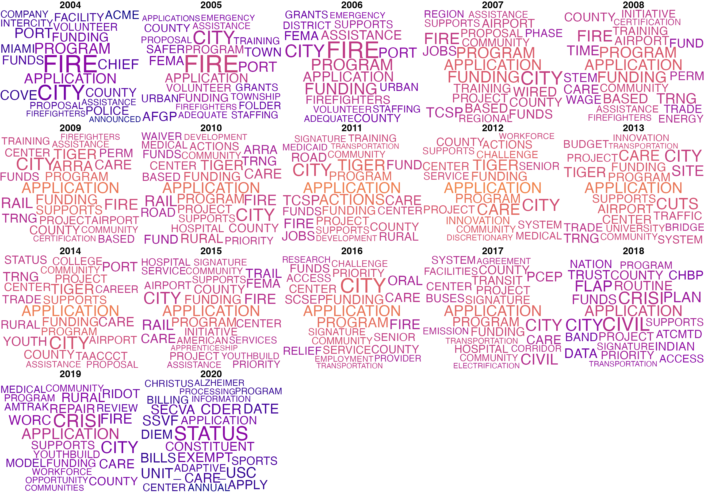
7 Representing Nonprofits and Local Governments
ABSTRACT: We examine what explains unequal levels of constituency service work on behalf of specific nonprofits and local governments. We find that inequality in work on behalf of nonprofits and local governments is mostly a story of unequal capacity across legislators. However, partisanship and ideology play a larger role in representing business interests than in other types of interbranch representation. Legislators do much more for nonprofits and local governments when they have a co-partisan in the White House, or they are ideologically aligned with the agency. This fits with research on distributive politics and presidential pork — a story in which nonprofits and local governments are disproportionately served by Democrats, who make requests of left-leaning agencies (like HUD) in Democratic administrations, and Republicans contact right-leaning organizations (like USDA) during Republican administrations.
In addition to providing constituency service to individuals and businesses in their districts, legislators provide similar types of service to nonprofit organizations and local governments. These entities often apply for competitive grants from the federal government; as part of this process, they may seek the support of their member of Congress, which involves the legislator writing to the relevant agency in support of the organization. Beyond working directly with federal agencies in this way, which is most directly relevant for our project, legislative offices also conduct grants workshops to provide resources to organizations that may wish to apply for these grants. By all accounts, this is a slightly more specialized form of constituency service that may benefit from additional knowledge and skill on the part of congressional staff.
Although our data show that letters in support of grants for local nonprofits and governments predate the congressional ban on earmarks that was instituted in 2011, we should acknowledge that legislators may be engaging in this activity as a substitute for appropriations activity, as Mills and Kalaf-Hughes (2015) describe. However, Mills and Kalaf-Hughes (2015) also find that “letter-marking,” as they term this behavior, may be less effective than earmarking.
7.1 What it looks like
Many of legislators’ requests on behalf of local governments and nonprofit organizations were in support of (or otherwise concerning) grants for which cities, counties, or other organizations had applied. These kinds of grants appeared across a number of different agencies for an array of purposes. For example, legislators wrote to the Department of Homeland Security (DHS) in support of local fire departments that had applied to FEMA’s Assistance to Firefighters Grants Program, which provides funding for first respondents and emergency personnel. Legislators also wrote to CMS on behalf of nonprofit health systems and local governments seeking to obtain grants as part of various CMS initiatives and programs, like the Pioneer Accountable Care Organization (ACO) Model and the Community-based Care Transitions Program (CCTP). Other groups sought grants from the National Institutes of Health (NIH).
Many letters to the Centers for Medicare and Medicaid Services (CMS) within the Department of Health and Human Services involved legislators forwarding concerns from local health care entities about matters specific to Medicare and Medicaid, including overpayments and Graduate Medical Education (GME) affiliation agreements for teaching hospitals.
Requests on behalf of nonprofits also make up a large share of interbranch representation to the IRS. Legislators’ offices inquire about why organizations have been audited, the processing time for 501c(3) tax-exempt status applications, and the reasons for canceling of tax-exempt status. They help with nonprofit paperwork — most frequently reinstatement of nonprofit status — and request that certain applications be expedited.
Letters on behalf of local governments appeared frequently in many subagencies within the Department of Transportation. For example, members of both the House and Senate from a number of different states wrote to the Federal Highway Administration (FHWA) in support of local transportation boards’ applications for the Transportation Investment Generating Economic Recovery (TIGER) I and II Discretionary Grant programs. While it was not uncommon for several legislators from the same state delegation to join together in support of a locality’s grant application, there are also examples of senators from different states co-authoring letters in support of grant applications submitted by multiple states. Bob Bennett (R-UT) and Barbara Boxer (D-CA) wrote jointly to the FHWA to support “the multi-state Phase II application submitted to DOT’s Corridors of the Future program for the I-80 corridor,” as Interstate 80 originates in California and passes through Utah. Overall, legislators’ work on behalf of nonprofits and local governments as part of interbranch representation speaks to both demand from these organizations and congressional offices’ capacity to respond to this demand.
7.2 Inequality in Nonprofit and Government Service
Figure 7.2 shows high levels of inequality across legislators in the amount of constituency service on behalf of nonprofits and local governments that legislators perform each year. Inequality in interbranch representation on behalf of nonprofits and local governments mirrors 2024 levels of income inequality in Honduras (.46) and Brazil (.5) for the House and the Senate, respectively. Several outliers, including Senators Schumer (D-NY), Gillibrand (D-NY), and Nelson (D-FL), are driving a fair share of inequality in the Senate, with Schumer writing over a hundred letters on behalf of nonprofits and local governments per year. In the House, on the other hand, the offices doing the most are closer to the rest of the distribution. The yearly averages are much lower, with Representatives Rahall (D-WV), Baldwin (D-WI, before she moved to the Senate), and Owens (D-NY) leading with averages of 11-15 letters per year.
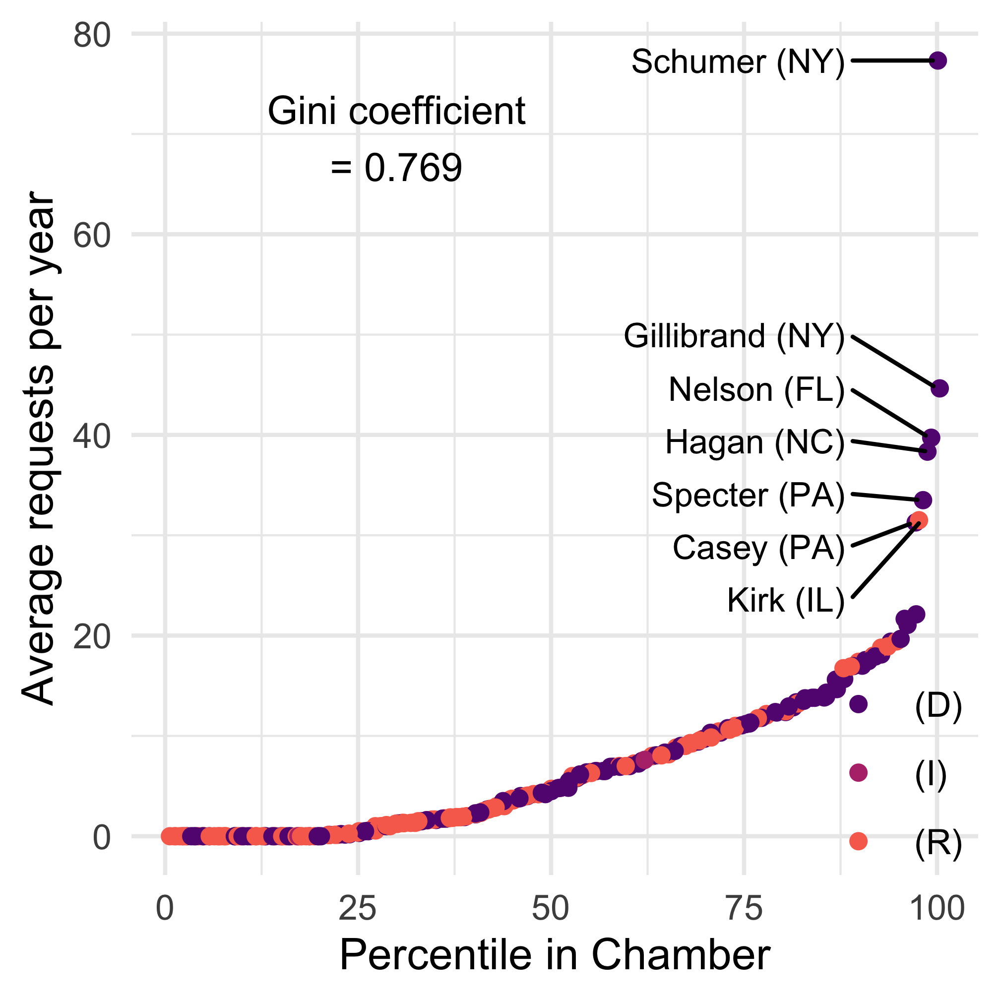
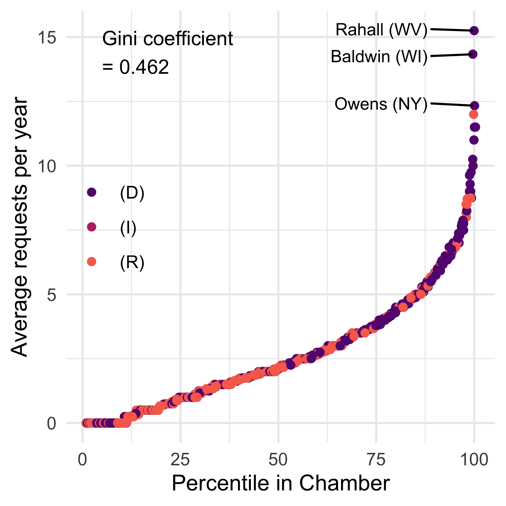
7.3 Explaining Differences in Nonprofit and Government Service
We now turn to models that seek to explain this variation using our theoretical framework of Demand, Capacity, and Strategic Responses to the Political Environment. The model specifications are the same as those that we have used in the previous chapters to examine overall interbranch representation, individual constituency service, and corporate constituency service. The results are shown in Table 7.1. Once again, we focus on the cross-sectional results in Models 1, 3, and 5.
| (1) | (2) | (3) | (4) | (5) | (6) | |
|---|---|---|---|---|---|---|
| † p < 0.1, * p < 0.05, ** p < 0.01 | ||||||
| Robust standard errors in parentheses, clustered by legislator. | ||||||
| This table shows estimates of the effect of constituent demand (population, employment, education, public assistance), legislator capacity (chamber, reporting committee, committee chair, subcommittee chair, and ranking member positions and years in office) and institutional positions that may affect strategic behavior (reporting committee membership, perceived ideological distance from teh agency, co-partisan president) on levels of interbranch representation. | ||||||
| Dependent variable | Count | Count | Count | Count | Count | Count |
| Constituent Demand | Constituent Demand | Constituent Demand | Constituent Demand | Constituent Demand | Constituent Demand | Constituent Demand |
| Population (Millions) | 0.053** | 0.086** | -0.674† | 0.050** | 0.204* | |
| (0.015) | (0.031) | (0.360) | (0.008) | (0.080) | ||
| % Government Sector | 1.177* | 0.038 | 1.653** | -0.887 | 0.396 | 35.139** |
| (0.593) | (1.350) | (0.542) | (1.411) | (1.585) | (12.474) | |
| % College Grad | 1.069** | 0.177 | 0.442† | -0.006 | 4.669** | -11.627 |
| (0.278) | (0.486) | (0.226) | (0.490) | (1.319) | (7.577) | |
| % Public Assistance | 8.953** | 7.499** | 4.107** | 5.110† | 35.333** | 19.321* |
| (1.601) | (2.786) | (1.295) | (2.739) | (5.910) | (8.990) | |
| Strategic Choices Shaped by Political Environment | Strategic Choices Shaped by Political Environment | Strategic Choices Shaped by Political Environment | Strategic Choices Shaped by Political Environment | Strategic Choices Shaped by Political Environment | Strategic Choices Shaped by Political Environment | Strategic Choices Shaped by Political Environment |
| Competitive General | -0.035 | 0.023 | 0.012 | 0.042 | -0.145* | -0.036 |
| (0.051) | (0.043) | (0.047) | (0.064) | (0.070) | (0.059) | |
| Competitive Primary | -0.081 | 0.014 | ||||
| (0.067) | (0.096) | |||||
| President's Party | 0.137* | 0.244** | 0.174** | 0.244** | 0.157† | 0.235** |
| (0.054) | (0.026) | (0.062) | (0.038) | (0.088) | (0.036) | |
| Republican | -0.193** | -0.164** | -0.239* | |||
| (0.052) | (0.049) | (0.112) | ||||
| Independent | -0.359** | -0.759** | ||||
| (0.126) | (0.121) | |||||
| Ideological Distance | -0.315** | -0.392** | -0.186† | |||
| (0.058) | (0.048) | (0.112) | ||||
| Distance x President's Party | 0.062 | 0.037 | 0.054 | |||
| (0.053) | (0.063) | (0.081) | ||||
| | 1st Dim. DW-NOMINATE | | -0.953** | -0.826** | -0.713* | |||
| (0.179) | (0.180) | (0.302) | ||||
| Capacity | Capacity | Capacity | Capacity | Capacity | Capacity | Capacity |
| Reporting Committee | 0.116** | 0.071 | 0.137** | 0.008 | 0.078 | 0.188 |
| (0.043) | (0.069) | (0.044) | (0.089) | (0.089) | (0.145) | |
| Three+ Years in Office | 0.256** | 0.146** | 0.194** | 0.123† | 0.654** | 0.216† |
| (0.044) | (0.050) | (0.048) | (0.068) | (0.122) | (0.128) | |
| Committee Chair | 0.140† | 0.105* | 0.036 | 0.047 | 0.079 | 0.099 |
| (0.083) | (0.053) | (0.089) | (0.084) | (0.085) | (0.061) | |
| Ranking Member | 0.140* | 0.112* | 0.019 | 0.043 | 0.099 | 0.159† |
| (0.066) | (0.056) | (0.063) | (0.078) | (0.095) | (0.083) | |
| Subcommittee Chair | -0.004 | 0.041 | -0.049 | -0.059 | -0.012 | 0.148* |
| (0.038) | (0.037) | (0.041) | (0.048) | (0.080) | (0.063) | |
| Served in State Leg. | 0.066 | 0.002 | 0.145 | |||
| (0.052) | (0.040) | (0.102) | ||||
| Senate | 1.145** | 0.544* | ||||
| (0.090) | (0.266) | |||||
| Observations | 224,990 | 72,882 | 159,998 | 48,828 | 38,203 | 19,820 |
| Year x agency fixed effects | X | X | X | X | X | X |
| Legislator x agency fixed effects | X | X | X | |||
| All legislators | X | X | ||||
| Only House | X | X | ||||
| Only Senate | X | X | ||||
Demand
We begin by testing our hypotheses about demand for interbranch representation. District population is positively associated with more constituency service work on behalf of nonprofits and local governments in the pooled model (1) and the Senate-only model (5). Thus, demand-focused expectations about the role of district population established in Hypothesis 2.1 are partially supported. Because populations in House districts are likely to vary only with natural population shifts between reapportionment and redistricting cycles, the negative relationship between district population and this type of interbranch representation in the House suggests that legislators representing districts with less population growth are doing more service on behalf of nonprofits and local governments. More research is needed to parse this relationship carefully.
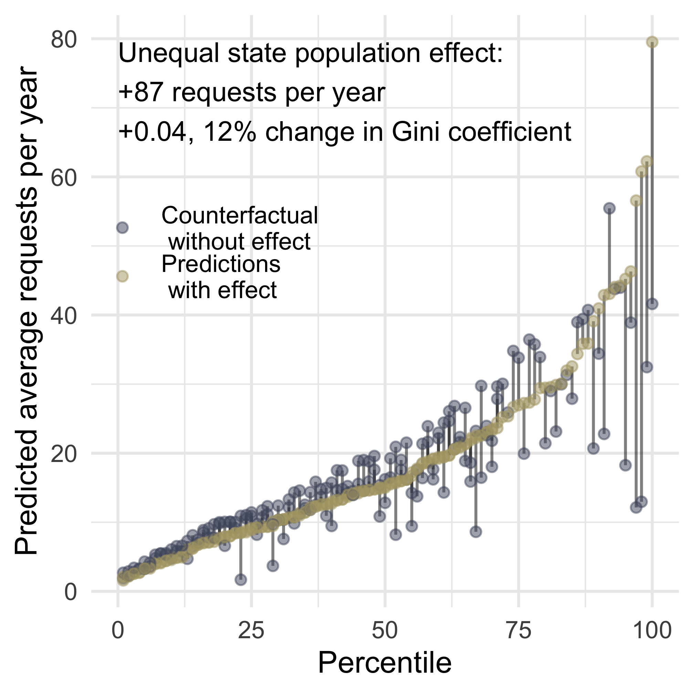
Figure 7.3 visualizes the effect of unequal populations on this inequality across legislators. As with other similar figures throughout the book, the plot compares predicted amounts of constituency service on behalf of nonprofits and local governments (based on our model) with counterfactual amounts that would exist if every legislator represented a district of equal population. Differences in population, however, do not explain all of the inequality in work on behalf of nonprofits and local governments.
Legislators who represent more demanding constituents, government sector employment, and the percent of college graduates are associated with work on behalf of nonprofits and local governments in most cross-sectional models.1
We find clear support for our expectations in Hypothesis 2.3 that legislators representing greater-need constituents would do more interbranch representation. The coefficients on the variable measuring the percentage of constituents who receive public assistance are positive and statistically significant in all relevant models. The effect is largest in the Senate-only model. Thus, while the provision of constituency service to individuals seemed not to be tied to greater need in the district, the provision of constituency service to nonprofit organizations and local governments does.
Capacity
Columns 1, 3, and 5 of Table 7.1 show differences across legislators with different capacity advantages. Most obvious here is the consistent effect of experience in office, as the coefficients on this variable (Three+ Years in Office) are positive and statistically significant in Models 1, 3, and 5. However, our other measure of experience, having served in a state legislature prior to Congress, is not related to this type of interbranch representation. These results lend some support to Hypothesis 2.5 and are largely in line with the results in the previous two chapters for our two other types of constituency service: legislators benefit from gaining experience specific to the institution of Congress.
Other indicators of capacity, however, have little to no relationship with constituency service on behalf of nonprofits and local governments. Committee chairs do no more of this type of interbranch representation than non-chairs, and being a ranking member of a committee is statistically significant only in the pooled model (Model 1). Thus, we find no support for our hypothesis about institutional position (Hypothesis 2.6).
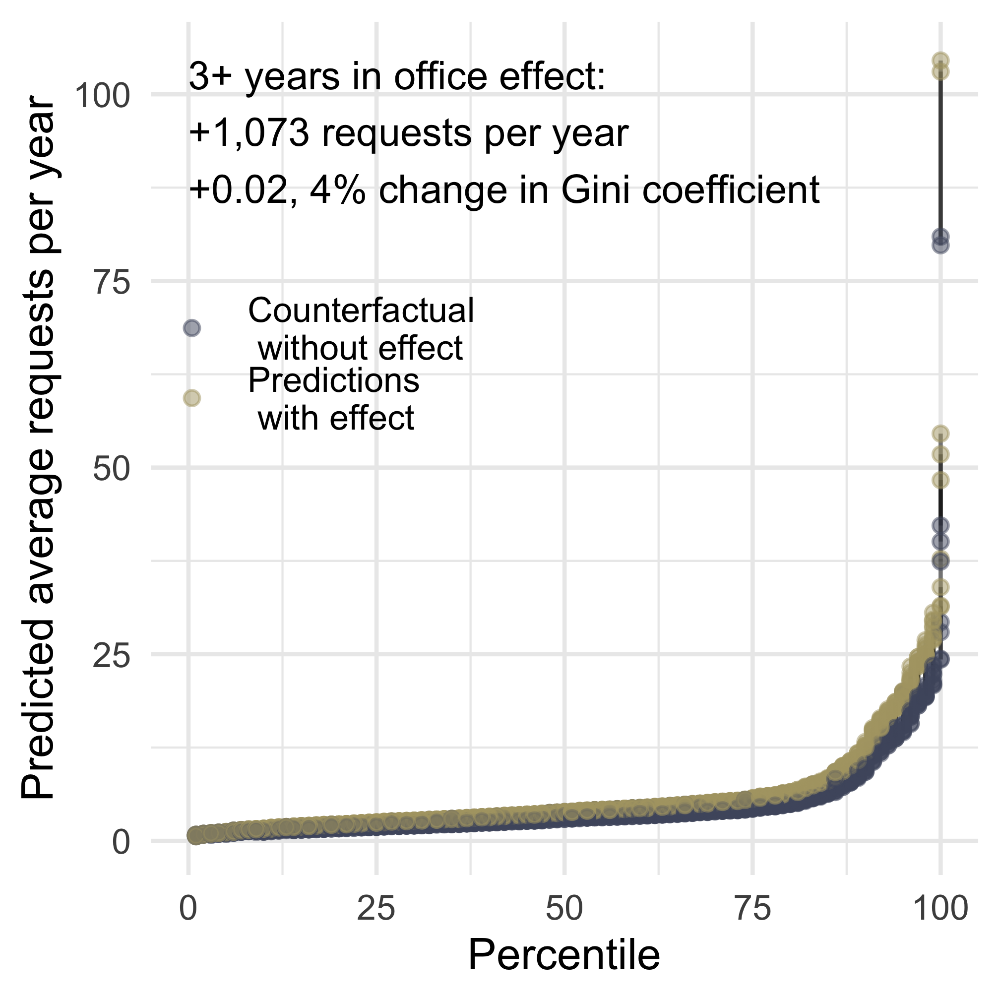
Figure 7.4 illustrates the different effects of these different measures of capacity. Once again, each panel compares the predicted levels of interbranch representation (with the effect of the variable in question taken into account) with a counterfactual in which the effect is excluded. Most of the total capacity effect (shown in Panel (a)) comes from the effect of experience in office (shown in Panel (a)).
The last component of capacity that we test in the models in Table 7.1 is whether a legislator sits on a committee with a reporting relationship with a particular agency. We hypothesized in Hypothesis 2.7 that legislators would do more interbranch representation with agencies for which they serve on a reporting committee. This relationship is only positive and statistically significant in Models 1 and 3 (the pooled and House-only models), as was the case for constituency service on behalf of individuals. Therefore, we find only some evidence to support Hypothesis 2.7.
Staff quality
We next assess another component of capacity: the quality of legislators’ staff. We established in Hypothesis 2.8 that we expect legislators with more experienced staff to do more interbranch representation. Given the importance of congressional staff in providing constituency service, including constituency service on behalf of nonprofits and local governments, we might expect that staff quality would be particularly important here. As in previous chapters, we use a rough proxy for staff experience: whether a new legislator took over for another legislator of the same party. We assume that some staff retention would occur in such a situation, giving the new legislator the benefit of more experienced staff (despite having no experience in Congress themselves).
Table 7.2 shows the results of six models that estimate the effect of staff retention on this type of interbranch representation. Although the coefficients on “New Member” are negative and statistically significant in the base models, interaction models, and models with additional control variables, there is no interaction between “New Member” and “Same Party.” As before, we find no support for Hypothesis 2.8 using this measure of staff experience but do not rule out the possibility that a more precise measure would produce different results.
| (1) | (2) | (3) | (4) | (5) | (6) | |
|---|---|---|---|---|---|---|
| † p < 0.1, * p < 0.05, ** p < 0.01 | ||||||
| Robust standard errors in parentheses, clustered by district | ||||||
| This table shows estimates of the effect of electing a new member of the same or different party on levels of interbranch representation. | ||||||
| Dependent variable | Count | Count | Count | Count | Count | Count |
| New Member | -0.276** | -0.183** | -0.203** | -0.206** | -0.584** | -0.073 |
| (0.048) | (0.033) | (0.062) | (0.062) | (0.134) | (0.066) | |
| New Member x Same Party | 0.003 | 0.103 | -0.067 | -0.065 | ||
| (0.108) | (0.092) | (0.218) | (0.096) | |||
| Same Party | -0.067 | -0.003 | -0.092 | 0.070 | ||
| (0.098) | (0.074) | (0.186) | (0.079) | |||
| Competitive General | 0.474** | -0.066 | ||||
| (0.148) | (0.055) | |||||
| President's Party | 0.124 | 0.190** | ||||
| (0.101) | (0.073) | |||||
| Republican | -0.317 | -0.051 | ||||
| (0.198) | (0.081) | |||||
| Independent | 0.476** | 0.082 | ||||
| (0.161) | (0.138) | |||||
| Ideological Distance | -0.134 | -0.223** | ||||
| (0.089) | (0.069) | |||||
| Distance x President's Party | -0.060 | -0.038 | ||||
| (0.070) | (0.071) | |||||
| | 1st Dim. DW-NOMINATE | | -0.701 | -0.474† | ||||
| (0.507) | (0.243) | |||||
| Senate | 2.309** | 2.286** | ||||
| (0.116) | (0.129) | |||||
| Observations | 229,987 | 229,315 | 81,425 | 79,546 | 80,000 | 78,134 |
| Year x agency fixed effects | X | X | X | X | X | X |
| District fixed effects | X | X | X | |||
Strategic Responses to the Environment
We turn now to tests of the final component of our theoretical framework: legislators’ strategic responses to the political environment. Most of the results pertaining to these hypotheses are shown in the models in Table 7.1.
Interbranch representation as electoral strategy
We find no support for our expectations in Hypothesis 2.9 that legislators facing more competitive elections would do more interbranch representation. The coefficient for the variable capturing competitive general elections is statistically significant only in Model 3 (Senate only). Contrary to our expectations, then, senators facing less competitive general elections do more constituency service on behalf of nonprofits and local governments.
Strategic responses to partisan institutions
Consistent with our expectations in Hypothesis 2.11, we find that legislators who share the president’s party do more constituency service on behalf of nonprofit organizations and local governments. The rationale behind this hypothesis was that legislators might anticipate a greater likelihood of receiving a response from an agency that is part of a friendly presidential administration. Our competing hypothesis, Hypothesis 2.12, posited that legislators would likely do more interbranch representation when they do not share the president’s party because they would have a partisan incentive to conduct oversight. For this specific type of interbranch representation, in which legislators are mostly writing in support of nonprofit organizations and local governments applying for grants from the federal government, finding support for Hypothesis 2.11 makes sense. It may also be the case that legislators are more likely to write in support of applications to grants that are part of programs they support. A co-partisan presidential administration would be more likely to implement such programs. Where possible, a more in-depth analysis of specific grants mentioned in the letters would shed light on this potential mechanism. Panel (a) in Figure 7.5 shows how sharing the president’s party contributes to the inequality in this type of interbranch representation that we find across legislators.
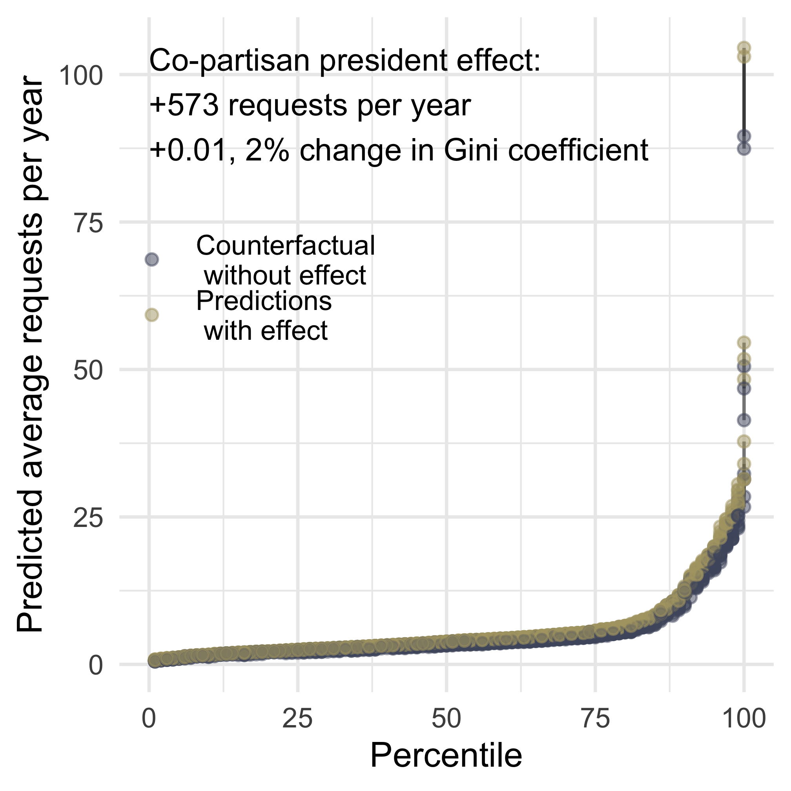
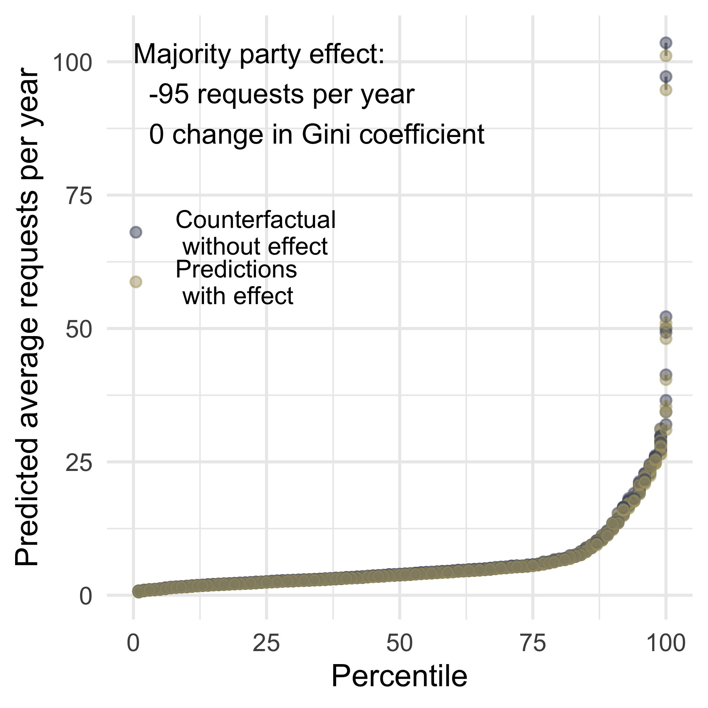
Our hypotheses regarding ideological distance between legislators and agencies followed similar logic. On one hand, we expected that legislators may do more interbranch representation with agencies to which they are ideologically proximate, the argument being that they support the agency’s objectives (Hypothesis 2.13). On the other hand, we posited that legislators may do more interbranch representation with agencies from which they are ideologically distant, as they may actively oppose the agency’s objectives (Hypothesis 2.14). We find support for Hypothesis 2.13. Legislators do more constituency service on behalf of nonprofits and local governments with ideologically proximate agencies. Again, this pattern may speak to the fact that legislators support the overall policy objectives of the grants for which these constituent groups are applying, particularly because the analyses for individual and corporate constituency service in the previous two chapters do not support this hypothesis. It is also worth noting that Democrats do more of this type of interbranch representation than Republicans and Independents, consistent with Democrats’ higher levels of support for government spending and other programs.
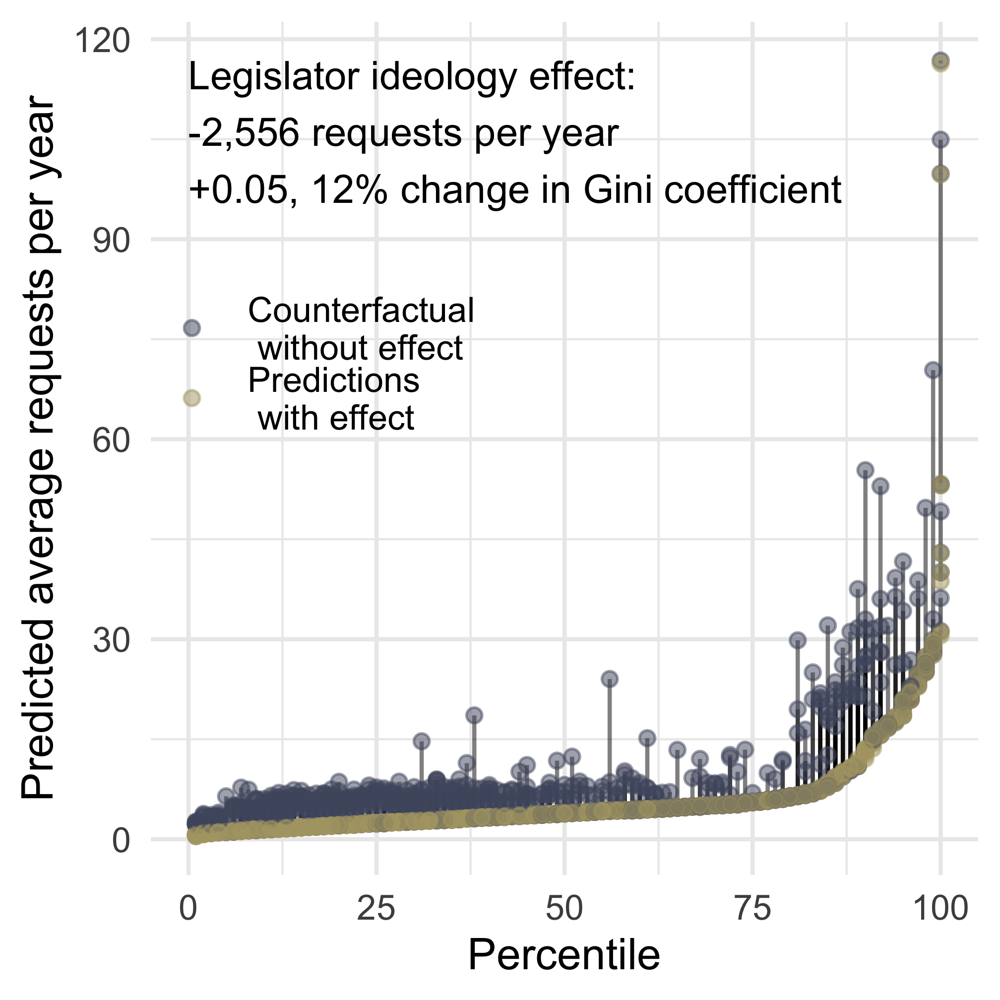
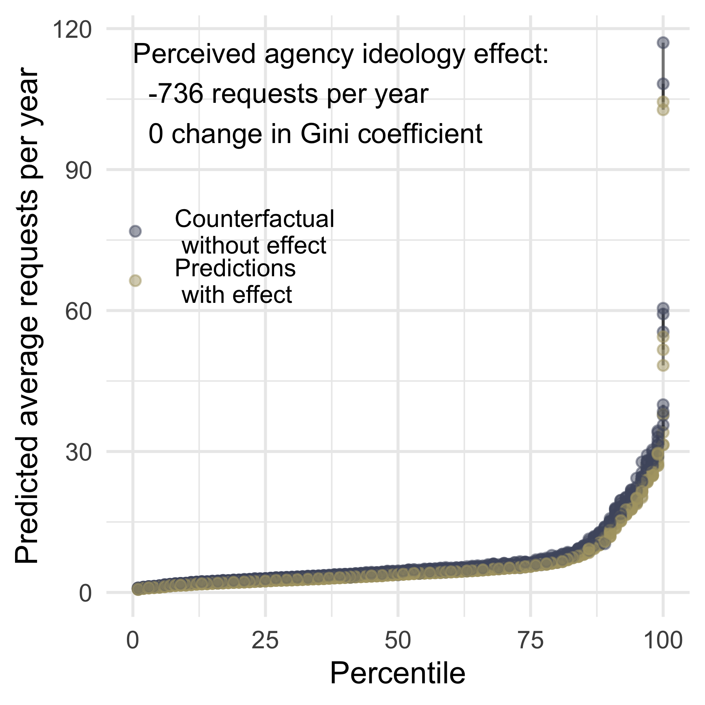
The effect of legislators’ ideology on interbranch representation is consistent with the results from previous chapters. More ideologically moderate legislators do more interbranch representation on behalf of nonprofits and local governments. Figure 7.6 shows the effect of ideological extremity on the inequality in this form of interbranch representation that we observe across legislators (Panel (a)), as well as the effect of agency ideology on this inequality (Panel (b)). As we can see from the comparisons between each effect and the counterfactuals in which these effects are not present, both of these factors impact inequality across legislators. However, that impact is larger for legislators’ ideology.
Staff allocation reflects priorities
Next we consider how legislators’ decisions about staff allocation might affect the amount of interbranch representation that they provide. Table 7.3 shows the results of models using legislators’ staff budgets in three different categories–legislative staff, communications staff, and constituency service staff–as the main independent variables. Models 1 and 2 examine the effects of these variables on their own (with fixed effects), while Models 3 and 4 also control for elements of capacity and strategy. All models examine House members only. We focus on the cross-sectional results in Models 1 and 3.
| (1) | (2) | (3) | (4) | |
|---|---|---|---|---|
| † p < 0.1, * p < 0.05, ** p < 0.01 | ||||
| Robust standard errors in parentheses, clustered by legislator. | ||||
| This table shows estimates of the effect of legislator staff spending. | ||||
| Dependent variable | Count | Count | Count | Count |
| Legislative Spending | 0.308 | -0.008 | -0.097 | -0.206 |
| (0.188) | (0.255) | (0.184) | (0.247) | |
| Comms. Spending | -0.796 | -0.079 | -0.633 | 0.137 |
| (0.594) | (0.665) | (0.545) | (0.664) | |
| Const. Spending | 0.874** | 0.383 | 0.635** | 0.390† |
| (0.192) | (0.233) | (0.181) | (0.230) | |
| Majority | 0.018 | -0.215** | ||
| (0.047) | (0.053) | |||
| President's Party | 0.511** | 0.194** | ||
| (0.044) | (0.048) | |||
| Reporting Committee | 0.123** | -0.050 | ||
| (0.047) | (0.108) | |||
| Three+ Years in Office | 0.122* | 0.098 | ||
| (0.051) | (0.077) | |||
| Committee Chair | 0.056 | 0.119 | ||
| (0.083) | (0.106) | |||
| Ranking Member | 0.101 | 0.041 | ||
| (0.097) | (0.100) | |||
| Prestige Committee | 0.022 | 0.077 | ||
| (0.046) | (0.080) | |||
| Subcommittee Chair | -0.040 | 0.062 | ||
| (0.057) | (0.066) | |||
| Served in State Leg. | -0.017 | -4.708 | ||
| (0.046) | (112947.561) | |||
| Observations | 108,795 | 30,787 | 108,410 | 30,695 |
| Year x agency fixed effects | X | X | X | X |
| Legislator x agency fixed effects | X | X | ||
| House Only | X | X | X | X |
In accordance with our expectations in Hypothesis 2.18, legislators who allocate more resources to constituency service staff do more constituency service on behalf of nonprofits and local governments. This relationship is slightly surprising given the lack of a relationship between constituency service staff and constituency service on behalf of both individuals and businesses. However, the slightly more specialized nature of constituency service work involving grants can help to explain this finding. Legislators often hire staff whose job it is to coordinate grants and help organizations through this process. This type of interbranch representation, then, is one for which capacity–and associated specialization–is most significant. Panel (a) of Figure 7.7 makes clear the role that staff budget plays in explaining inequality in constituency service work on behalf of nonprofits and local governments.
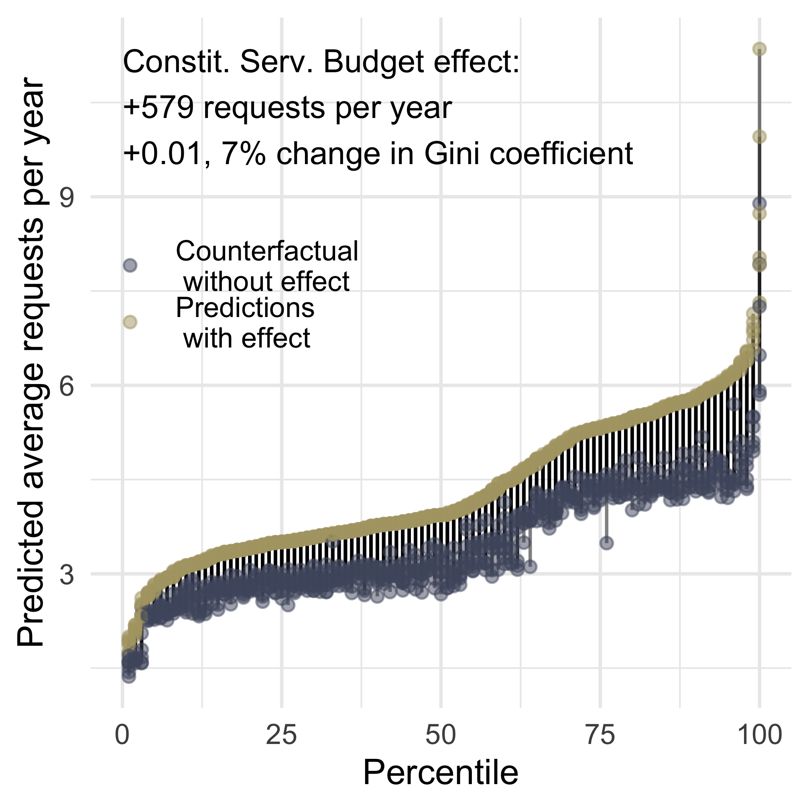
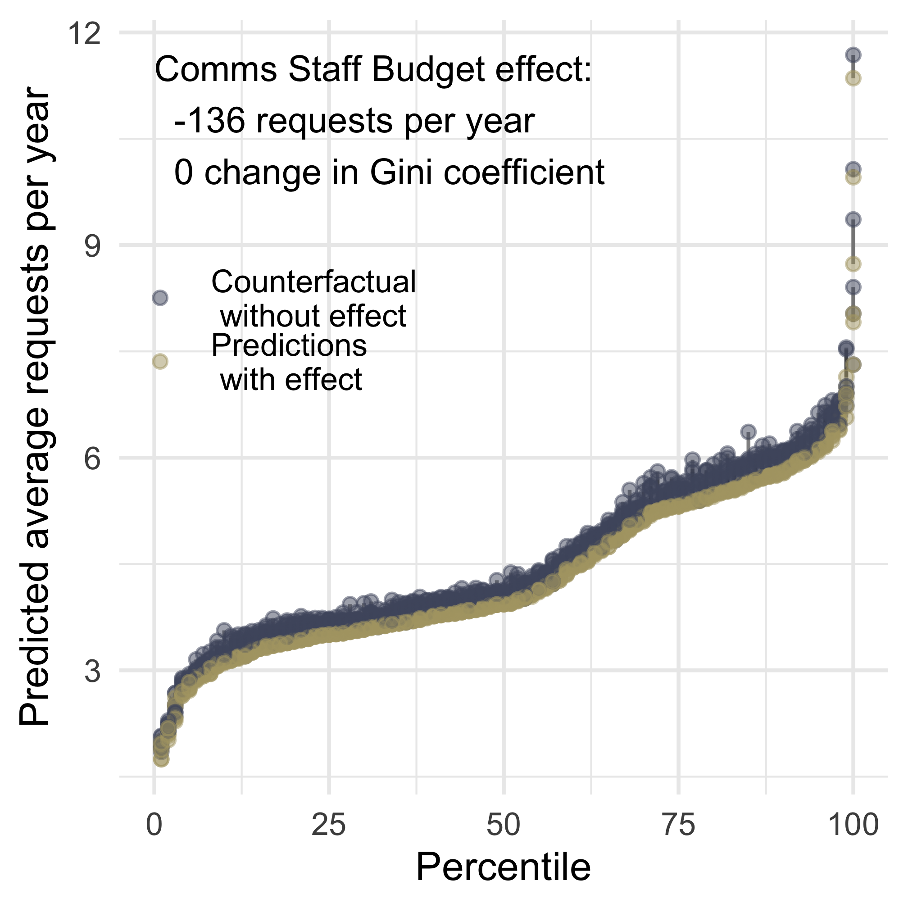
Strategic: Fundraising
Hypothesis 2.16 posited that fundraising distracts from constituency service, and thus legislators who engage in more corporate fundraising will do less interbranch representation of nonprofits and local governments. Table 7.4 shows a relationship in the opposite direction as theory predicted. Legislators who receive more money from corporate donors also do more interbranch representation for nonprofits and local governments. While we do not believe that these activities are causally linked, this finding does suggest that there is not necessarily a trade-off between fundraising and this type of interbranch representation.
| (1) | (2) | (3) | (4) | |
|---|---|---|---|---|
| † p < 0.1, * p < 0.05, ** p < 0.01 | ||||
| Robust standard errors in parentheses, clustered by district | ||||
| This table shows estimates of the relationship between corporate Political Action Committee donations and levels of interbranch representation. | ||||
| Dependent variable | Count | Count | Count | Count |
| Corporate Campaign $ (Millions) | 0.018** | -0.001 | 0.015** | -0.002 |
| (0.004) | (0.005) | (0.004) | (0.005) | |
| Majority | -0.060 | -0.071* | -0.060† | -0.096** |
| (0.041) | (0.031) | (0.036) | (0.035) | |
| President's Party | 0.125* | 0.240** | 0.113† | 0.232** |
| (0.058) | (0.027) | (0.060) | (0.026) | |
| Republican | -0.330** | -0.344** | ||
| (0.087) | (0.080) | |||
| Independent | -0.684** | -0.606** | ||
| (0.146) | (0.102) | |||
| Ideological Distance | -0.310** | -0.300** | ||
| (0.069) | (0.068) | |||
| Distance x President's Party | 0.065 | 0.064 | ||
| (0.056) | (0.056) | |||
| | 1st Dim. DW-NOMINATE | | -0.735** | -0.708** | ||
| (0.178) | (0.174) | |||
| Reporting Committee | 0.134** | 0.061 | ||
| (0.044) | (0.067) | |||
| Three+ Years in Office | 0.275** | 0.161** | ||
| (0.042) | (0.052) | |||
| Committee Chair | 0.248† | 0.153** | ||
| (0.142) | (0.056) | |||
| Ranking Member | 0.169* | 0.047 | ||
| (0.066) | (0.056) | |||
| Prestige Committee | 0.067† | 0.003 | ||
| (0.040) | (0.056) | |||
| Senate | 1.563** | 1.012** | 1.446** | 1.025** |
| (0.091) | (0.169) | (0.072) | (0.165) | |
| Observations | 229,261 | 74,015 | 227,076 | 73,454 |
| Year x agency fixed effects | X | X | X | X |
| Legislator x agency fixed effects | X | X | ||
7.4 A Unique Type of Constituency Service
Advocating on behalf of nonprofit organizations and local governments, particularly those seeking support for grants, is a distinctive type of constituency service. That distinctiveness is apparent in our findings about what explains levels of (and inequalities in) service on behalf of nonprofits and local governments. Staff are important for this kind of work, as they are for both individual and corporate constituency service. Where this form of constituency service diverges from the other two that we have considered is in its closer relationship with policy. The grants for which these organizations apply are often a key part of policy implementation, which means that legislators’ partisanship and ideology matter more for how they approach this kind of work. Legislators do more of this work on behalf of nonprofits and local governments when they share the party of the president and when they are ideologically closer to an agency, suggesting that they see these expressions of support as a means of controlling policy implementation. At the same time, these grants make a measurable difference in the lives of the communities that legislators represent, making them a key component of constituency service.
Alternatively, when nonprofit employment is included in the model (Table C.13), it also has a strong relationship across specifications. However, government sector employment and public assistance loose significant in most of these alternative models, suggesting that these variables are competing to explain the same variation, consistent with there being an underlying latent quality of a more demanding constituency.↩︎